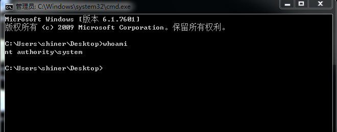

学习一下windows kernel
提权原理
类似于linux kernel中进程的特权由cred中uid等值管理，windows kernel在进程管理中有token值决定特权，但是其表示的值，并不像linux中一成不变，例如root权限为0，system权限的值需要我们可以通过查询一些具有system权限例如system进程的token值获得。
这里采用windbg+virtualKD进行双机调试：
通过!dml_proc查看当前进程：
1 | 1: kd> !dml_proc |
可以看到system进程的pid为4，这个经调试发现是一成不变的，我们后续可以通过这点来编写shellcode，然后我们继续查询进程信息，可以通过dt _EPROCESS 867ee8e8查看：
1 | 1: kd> dt _EPROCESS 867ee8e8 |
其中偏移0xb4的位置为进程的pid，0xb8偏移处的ActiveProcessLinks作为指针指向下一个进程的ActiveProcessLinks处，0xf8为进程的token其类型为_EX_FAST_REF。这里我们为了验证修改进程token可以实现提权，打开一个cmd进程，并将其token改为system进程的token，首先查询system进程token：
1 | 1: kd> dt _EX_FAST_REF 867ee8e8+f8 |
同理，找到cmd进程的token所在位置为8805fa50+f8,使用ed 8805fa50+f8 0x8b201267修改其值，发现提权成功：

shellcode调试
shellcode编写就是通过汇编来实现我们以上的那些操作，从找到system进程的token到将此token覆盖掉当前进程token的这一过程。这部分内容参考thunderj师傅的文章https://thunderjie.github.io/2019/06/28/Windows-Kernel-Exploit/，详细过程可以去看师傅的解析，利用HEVD这个漏洞环境中的uaf漏洞，覆盖结构体中函数指针，从而实现类似于Linux kernel利用这ret2usr的操作来到达用户空间执行我们的shellcode(摘自thunderj师傅)：
1 | void ShellCode() |
这里我记录一下我的调试shellcode的办法，以免在shellcode执行中出现栈不平衡等问题导致crash，大家可以配合来看。首先为了方便调试我们在windbg中加入hevd的符号：
然后我们就可以找到hevd中的函数，根据UAF漏洞的触发源码里得知是在UseUaFObjectNonPagedPool中由于修改了g_UseAfterFreeObjectNonPagedPool->Callback，我们最终调用了shellcode的执行，所以要在windbg中找到UseUaFObjectNonPagedPool。首先我们加载hevd驱动，找到hevd驱动信息：
1 | 1: kd> lm m HEVD |
点击functions找到UseUaFObjectNonPagedPool函数，并利用bp指令下断点：
1 | 0: kd> x /D HEVD!g* |
运行程序暂停的断点位置，然后我们找到HEVD!g_UseAfterFreeObjectNonPagedPool变量，查看现在它的值，可以发现已经被我们更改：
1 | 0: kd> dx -r1 ((HEVD!_USE_AFTER_FREE_NON_PAGED_POOL *)0x8693f4c8) |
可以用uf 0x1341195查看callback里的函数指令，我们在该处下断点就可以调试我们的shellcode了。